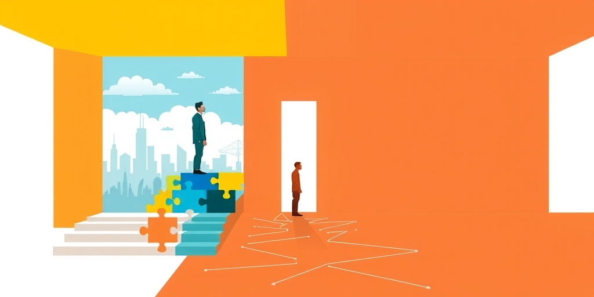

小汪老师的成长洞察 · 属于你的成长专栏
你发现了吗？公交车上那个为老人让座的年轻人，已经消失很久了。这不是一场道德水平的集体滑坡，而是一次精密的舆论手术——手术刀，就是你每天刷到的那些短视频。
让座这件事，从来就不是人类的天性。站着比坐着累，这是最朴素的生理事实。一个坐在座位上的人，面对一个站着的老人，他内心第一反应大概率是“假装没看见”。这是写在基因里的资源竞争本能，跟道德无关。
十几年前，为什么还是有人会让？因为他们身处一套正在有效运转的集体规范执行系统里。这套系统有三个关键齿轮：第一，被看见的代价很高。车厢里沉默的目光本身就是一种评判，不让座的人会感到难堪，不是因为他有多高尚，而是他在意“别人怎么看我”。第二，规范是共识的。所有人都默认“年轻人该给老弱让座”，这个前提没人质疑。在一个规范共识存在的空间里，违反它的成本是真实的。第三，会有人出来“执法”。哪怕只有一个人轻声说一句“年轻人，让个座”，这句话就完成了规范的社会性执行。它的力量不来自说话的人，而来自背后那套看不见的共识。
所以，让座的本质不是个人美德的闪光，而是一个社会空间里集体压力的可见呈现。它依赖于每个人对他人期待的预判。当这个预判崩塌，美德也就成了无根之木。
第一个楔子，是“坏人变老了”。大概从十年前开始，关于老人碰瓷、强抢座位的新闻和视频被大量传播。这些事件本身是真实的。但问题在于，媒体对它们的处理方式是无比例感地选择性放大。看了上百条这类内容后，你在车上面对一个真实老人时，心理状态已经变了：他不再是需要帮助的弱者，而成了一个需要评估的潜在风险源。道德的动力，就这样被风险规避的本能替代了。
第二个楔子，是“熊孩子”叙事的反向连带。“熊孩子”话题表面上是批评无礼的儿童和失职的父母，但它产生了一个隐性的认知副作用：孩子成了麻烦的代名词，带孩子的家庭成了潜在负担。这悄悄改变了人们对“老幼病残”这个整体的无条件信任。十几年前，帮助他们是默认设置。现在，这个默认设置需要你先花时间去“甄别”。甄别这个动作本身，就消耗了让座的道德动力。
第三个楔子，最直接也最有力：“年轻人也很累，凭什么让”。这套叙事把让座从“社会规范”的框架，拉进了“个人权利交换”的框架。它用真实的年轻人职场压力作为论据，论证在权利交换的逻辑下，没有人有义务吃亏。让座从一种默认的、不需要理由的社会行为，变成了一种需要特殊理由的个人牺牲。当框架被替换，逻辑就完全不同了。
为什么媒体，尤其是新媒体和算法平台，会选择放大这些叙事？这并非一场针对传统美德的阴谋，而是一个更冰冷的事实：在流量逻辑下，冲突性和情绪摩擦是硬通货。一篇“感人让座瞬间”的正能量视频，和一篇“老人强迫让座反被怼”的冲突视频，在算法面前的命运截然不同。后者有对立、有愤怒、能激发站队，每一个评论和转发都是实打实的流量。
于是，媒体（无论是机构还是个人）在流量压力下，被系统性地引导去选择那些更容易传播的内容。而那些内容，恰好是解构性的、去责任化的、能挑动情绪的。更深层的问题在于，这些内容在单次传播时，看起来都无可指摘——“老人碰瓷”是真的发生了，那是“揭露社会问题”。但当这类内容在算法的加持下被反复、高频、无比例地推送时，它完成的就不是“揭露”，而是“重塑”——重塑你对老年群体的认知，重塑你对公共责任的理解，重塑整个车厢里的心理预期。
这个过程是“润物细无声”的。没有一条内容在直接告诉你“别让座”，但经过几千次这样的认知浸泡，你内心那根连接着集体规范的弦，就这样被一点一点地、无声地剪断了。正如一些心理学研究指出的，人们对负面信息和冲突故事有着天然的注意力偏好，这恰好与流量逻辑合谋，完成了对传统规范的系统性解构。

集体规范有一个特性：它在运转时自我强化，但一旦崩解，重建的成本将远远高于当初的维护成本。当“不让座”成了车厢里的新默认状态，一个想让座的人反而会感到压力。他在一个“不让座才正常”的环境里选择起身，会显得突兀、奇怪，甚至可能被旁人解读为“讨好”或“作秀”。旧的规范消失了，但一个新的、反向的规范压力已经形成。
这就是为什么简单的“正能量宣传”无法逆转趋势。你不能用几条感人的让座视频，去对抗一个已经被流量逻辑重塑了整整一代人的认知框架。问题的根源不是人们不知道让座是好事，而是“让座”这个行为所依附的、那个“我们共同认可一套规则，并相信别人也认可”的集体预设，已经不存在了。我们正在从“默认信任”滑向“默认怀疑”。
让座只是一个窗口。透过它，我们看到的是一个更大的侵蚀过程：公共空间里的相互体谅、邻里间的守望相助、陌生人之间最基本的善意预设……这些构成社会基础信任的“软性规范”，都在经历同样被流量叙事拆解的命运。当这些规范被系统性侵蚀，我们失去的远不只是一个让座的习惯。我们失去的，是那种身处公共空间、知道彼此共享一套基本行为准则的安全感。这种安全感的丧失，才是最难以察觉、也最难挽回的损失。
写给你的话
我们总在讨论道德滑坡，却很少追问：是谁，用什么方式，改变了道德的运行环境？也许更值得警惕的是，当“曝光”和“批判”成为流量密码时，我们每一次对负面事件的愤怒转发，都在无意中为剪断那根集体规范的剪刀，增加了一分力道。
下次当你在公共场合，面对一个需要帮助的人却感到犹豫时，可以想一想：此刻束缚住你的，是你内心的冷漠，还是你脑子里那个被算法精心塑造过的、关于“这类人”和“这类事”的风险剧本？我们以为自己在独立思考，但很多时候，只是在执行一套被灌输的认知程序。
参考资料
[1] Psychology says most people only pretend to care about your life and are just looking for juicy gossip: Why bad news is more interesting for them (The Economic Times) https://economictimes.indiatimes.com/news/international/us/psychology-says-most-people-only-pretend-to-care-about-your-life-and-are-just-looking-for-juicy-gossip-why-bad-news-is-more-interesting-for-them/articleshow/131515692.cms
[2] Psychology says people who speak less carry more authority because talking is how most people seek approval, and the absence of having to prove yourself registers as power no amount of articulation can replicate (The Economic Times) https://economictimes.indiatimes.com/news/international/us/psychology-says-people-who-speak-less-carry-more-authority-because-talking-is-how-most-people-seek-approval-and-the-absence-of-having-to-prove-yourself-registers-as-power-no-amount-of-articulation-can-replicate/articleshow/131566463.cms
小汪老师的成长洞察 · 属于你的成长专栏